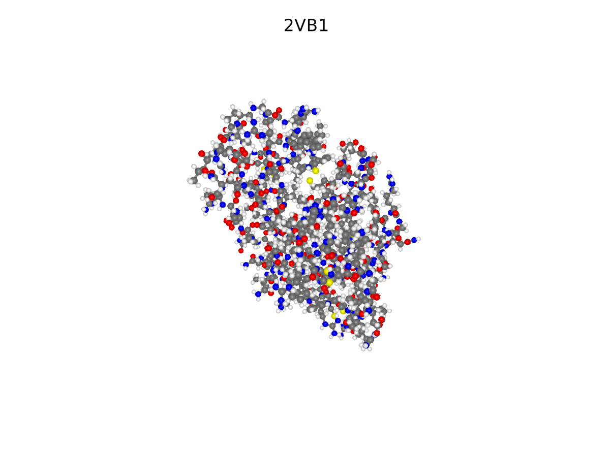

BioMakie
A user interface for bioinformatics.
Description
BioMakie.jl is a package designed to facilitate visual investigation of biological data. It aims to provide extra tools to view and measure differences between data of such things as protein structures and sequences. If you have ever been staring at a command line or a REPL thinking about how much easier it would be if you had some graphical controls, then maybe BioMakie can be of some help!
BioMakie utilizes other packages in the BioJulia ecosystem like BioStructures.jl, and outside packages like MIToS.jl to perform comparisons, load data, and to do most of the computation/numerical analysis. Makie Node objects can contain data and be tracked. Any changes or updates to the data inside these Nodes will be heard by the Node and this can drive event chains that update many interdependent values and their graphical representations immediately.
For more examples of what Makie can do, visit the documentation at https://makie.juliaplots.org/stable/
Setup
# in the REPL
]add BioMakie
# elsewhere
using Pkg
Pkg.add("BioMakie")
# import the package
using BioMakieBasic Usage
To view a PDB structure, use the viewstruc function with a PDB ID. The following code plots the structure then returns a StructureView with the scene and layout.
sv = viewstruc("2VB1")

This page was generated using Literate.jl.